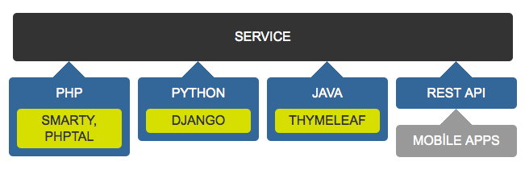
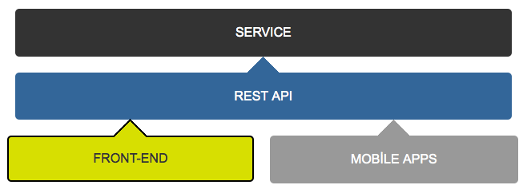

From
Website
to
Webapp
Introducing SAFE
Murat Çorlu
Principal Front-End Developer at sahibinden.com
Sahibinden.com
- Leading classified website of Turkey
- 2 millions of visitors for a day
- 3 billions of pageviews for a month
- 4.5 millions of active classified online
- 16 minutes of average visit duration
sahibinden.com architecture
(1 year ago)

pain of front-end developers
- Backend oriented development environment
- Long adaptation period
- Similar problems different solutions
- Dependent teams to each other
then adventure has begun

- Browsers are clients like mobile apps
- Backend should focus on it's tasks
- Frontend should focus on it's tasks too
- Unlimited scalability: Using visitors' devices
SAFE
- SAhibinden Front-End
- "Be calm, it's SAFE"
what techs we used
- Node.js/npm
- AngularJS
- Grunt
- Stylus
- Bower
what we success
- Totally seperated development environment
- Working without a backend (connect-api-mocker@github/sahibinden)
- More testable code (karma)
- Less fault tolerant (jshint)
- Less boring tasks (stylus, grunt)
give me some spoiler!